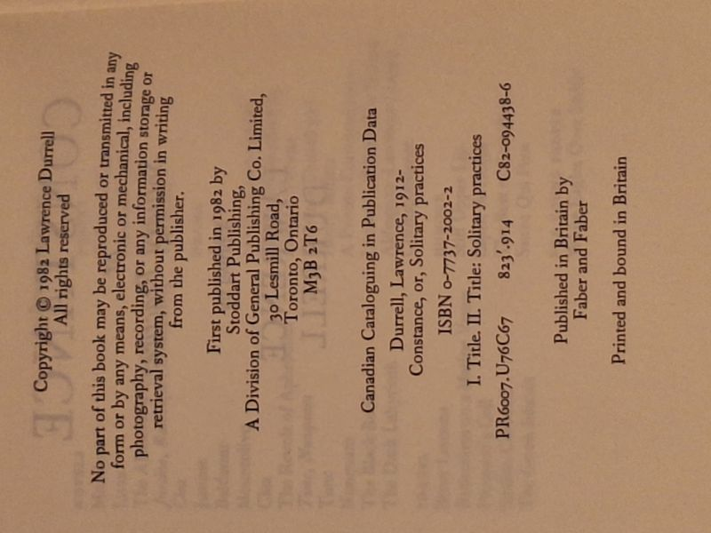

Constance, or Solitary Practices
Lawrence Durrell · Stoddart Publishing, Toronto, 1982

C$30 · Very Good condition
Stoddart Publishing, Toronto, 1982. Canadian first edition of the third novel in Lawrence Durrell's Avignon Quintet, printed and bound in Britain by Faber and Faber. Hardcover with unclipped dust jacket. ISBN 0-7737-2002-2. Boards clean, binding tight, no foxing or prior-owner marks. Dust jacket in very good condition with watercolour cover illustration of a Provencal stone village with a figure on horseback. The Avignon Quintet (Monsieur 1974, Livia 1978, Constance 1982, Sebastian 1983, Quinx 1985) continues Durrell's exploration of Mediterranean myth, Templar history, and gnostic philosophy that began with The Alexandria Quartet.
Details
- Publisher: Stoddart Publishing, Toronto, 1982
- Binding: Hardcover
- Edition: Canadian First Edition
- Condition: Very Good
- Dust jacket: Very Good
- ISBN: 0-7737-2002-2
- Category: Literary Fiction